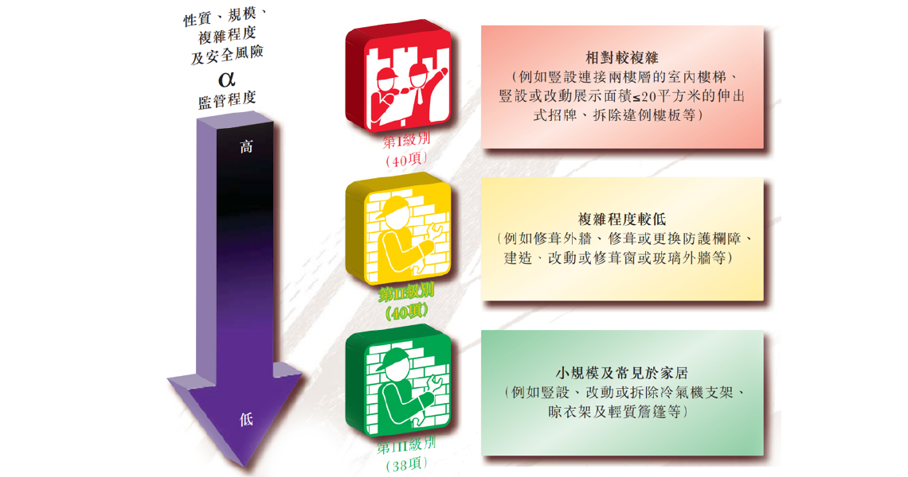

本公司特提供一站式小型工程顧問服務，協助小型工程承辦商及有意進行小型工程之人仕處理一切屋宇署所要求之審批及呈報工作。
在《建築物(小型工程)規例》下，某些建築工程已具體指定「小型工程」。這些工程會按其性質、規模、複雜程度和安全風險分為三個級別。
施加於三個級別的「小型工程」的監管程度各異。由於第一級別小型工程相對較復雜，需要較專業的技術知識和較嚴格的監督。
每個級別的「小型工程」再細分為不同類型和項目。
